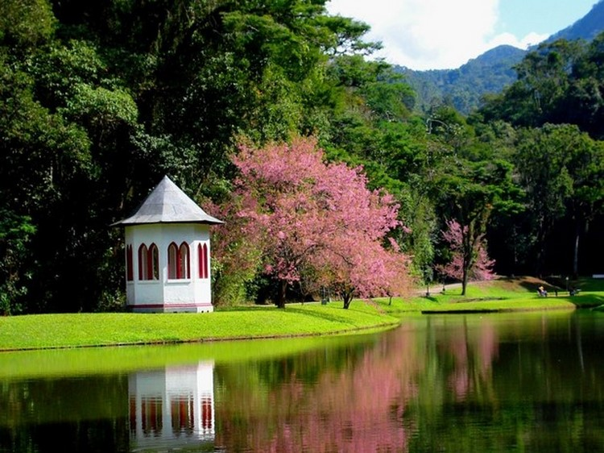

Introdção
Nova Friburgo é um município brasileiro do estado do Rio de Janeiro, distando cerca de 136 quilômetros da capital estadual. Ocupa uma área de 935,429 km², e sua população foi estimada em 203 328 habitantes em 2024, sendo, então, o 16.º mais populoso do estado. A sede tem uma temperatura média anual de 18,1 °C e na vegetação do município predomina a Mata Atlântica. Com 159 372 habitantes vivendo na zona urbana, o município contava, em 2021, com 22 unidades básicas de saúde. O seu Índice de Desenvolvimento Humano (IDH) é de 0,745, considerando como muito alto em relação ao estado. As principais atividades econômicas são baseadas em: indústria metalúrgica, moda íntima, olericultura, caprinocultura e indústria (têxteis, vestuário e do setor metal-mecânico) e turismo. É também a cidade mais fria do estado. Em 1.º de setembro de 2017, Nova Friburgo recebeu o título de "Suíça Brasileira". O então governador do Estado, Luiz Fernando Pezão, sancionou a lei 7.683, de autoria do deputado Samuel Malafaia, que homenageia a cidade. A lei entrou em vigor em 4 de setembro do mesmo ano, após ser publicada no Diário Oficial do Estado.
